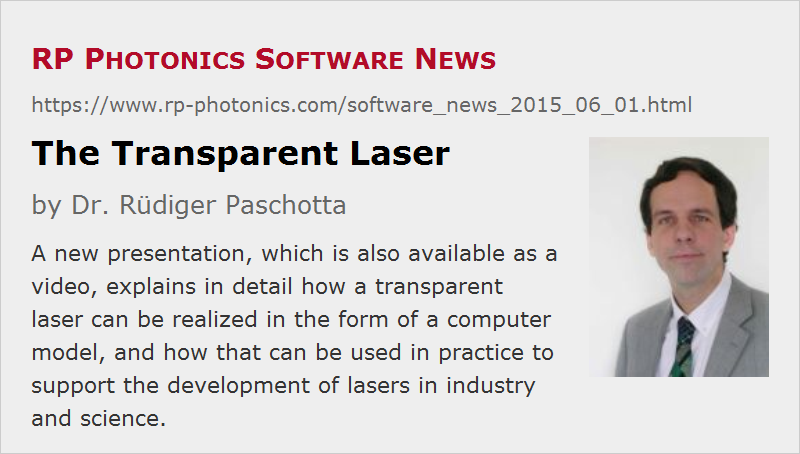

The Transparent Laser
Posted on 2015-06-01 in the RP Photonics Software News (available as e-mail newsletter!)
Permanent link: https://www.rp-photonics.com/software_news_2015_06_01.html
Author: Dr. Rüdiger Paschotta, RP Photonics Consulting GmbH
Abstract: A new presentation, which is also available as a video, explains in detail how a transparent laser can be realized in the form of a computer model, and how that can be used in practice to support the development of lasers in industry and science.

One of the most difficult aspects of laser development is that experimental tests can normally only reveal the performance of a laser device – things like output power, beam quality and pulse properties – but not what goes on inside the device. The latter, however, must be understood for fixing problems and optimizing the performance.
Therefore, it would obviously be marvelous if one had a “transparent laser” where you can simply look inside to see what happens inside: you could see how exactly quantities like optical intensities and excitation densities are at any point within the device (e.g., in a laser crystal or active fiber), and how exactly they evolve over time.
Everyone would agree that this would be marvelous, but many are not aware that such a transparent laser can actually be made – in the form of a computer model, which simulates the relevant internal processes, calculates the resulting laser performance from them and can finally present all details e.g. in the form of graphical diagrams – notably not only concerning performance, but also all internal details.
It is fairly easy to realize that an industrial laser developer or a laser scientist can work far more efficiently (i.e., save time and money) when having such a powerful tool. It is somewhat less obvious, however, how exactly such a tool can be used in practice and which steps can be taken to obtain it. Therefore, I have worked out a detailed presentation, which is now available in the form of a video but also (for quick readers) in other formats. You can find all that on the following new web page:
https://www.rp-photonics.com/software_modeling.html
This article is a posting of the RP Photonics Software News, authored by Dr. Rüdiger Paschotta. You may link to this page, because its location is permanent.
Note that you can also receive the articles in the form of a newsletter or with an RSS feed.
|  |
If you like this article, share it with your friends and colleagues, e.g. via social media:
These sharing buttons are implemented in a privacy-friendly way!